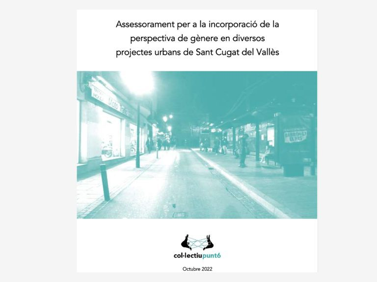
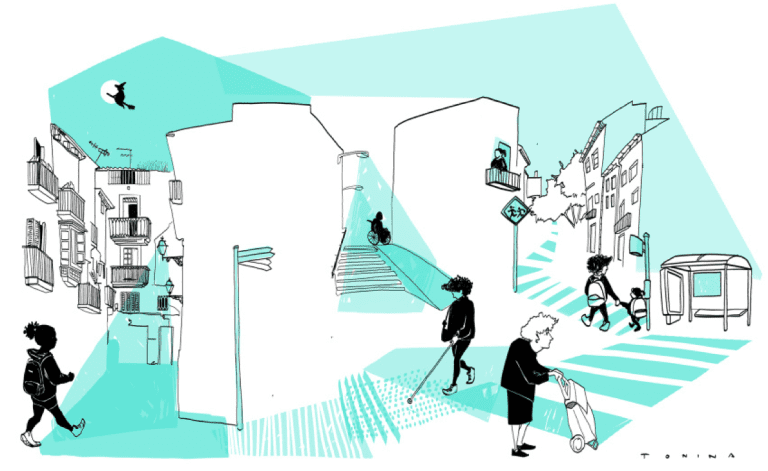
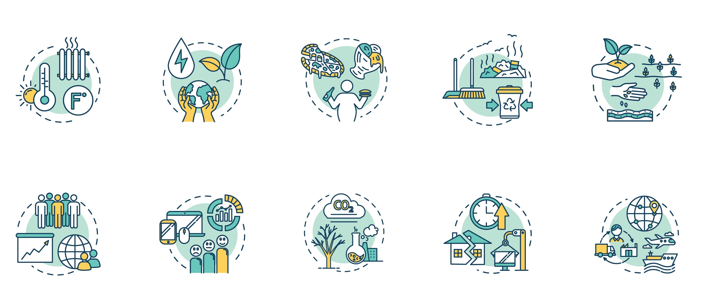
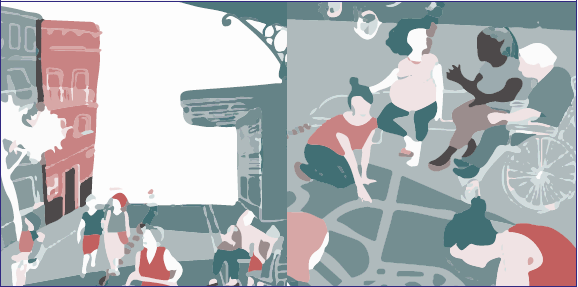

PROYECTOS:

Asesoramiento en Proyectos
Asesoramiento para la incorporación de la perspectiva de género en varios proyectos urbanos de Sant Cugat del Vallès

Curso online de Urbanismo con perspectiva de género
Curso de 20 horas que se realiza online en colaboración con Atena Gender Consulting.

Procesos participativos
Dinamización en el taller de elaboración del PGOU de Vitoria-Gasteiz.

Procesos participativos
Repensar las ciudades desde la experiencia cotidiana y las prácticas y teorías feministas